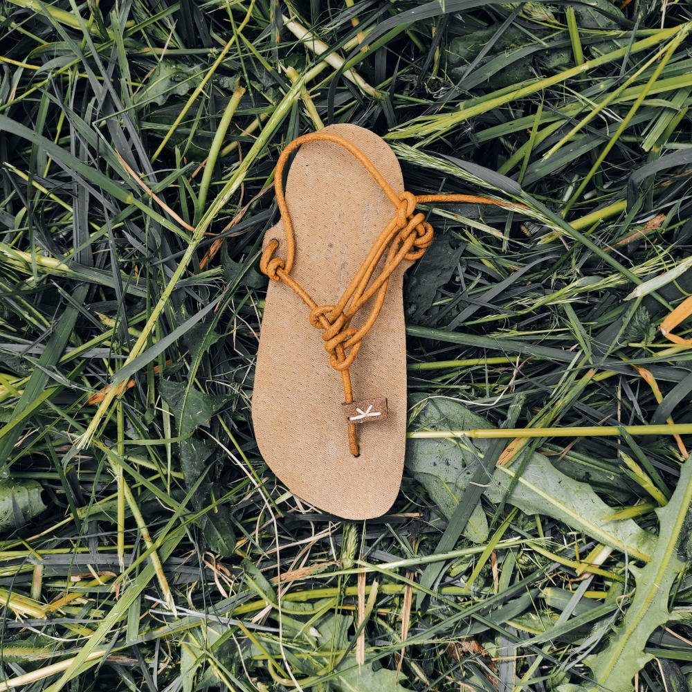
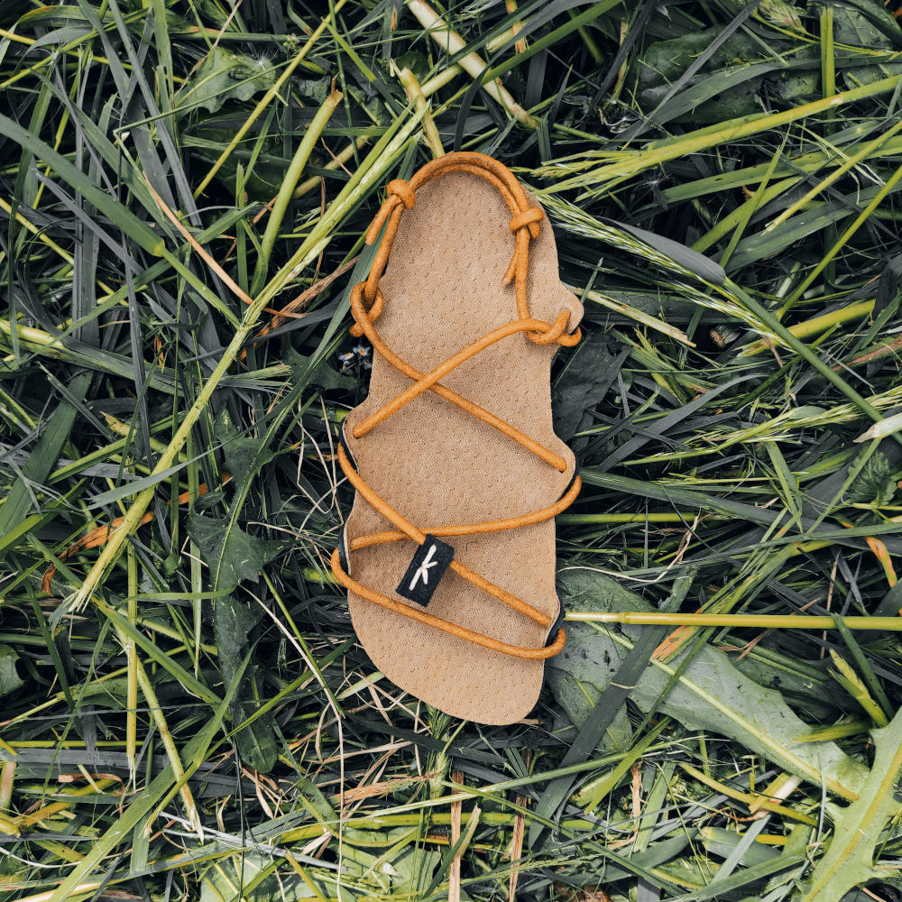
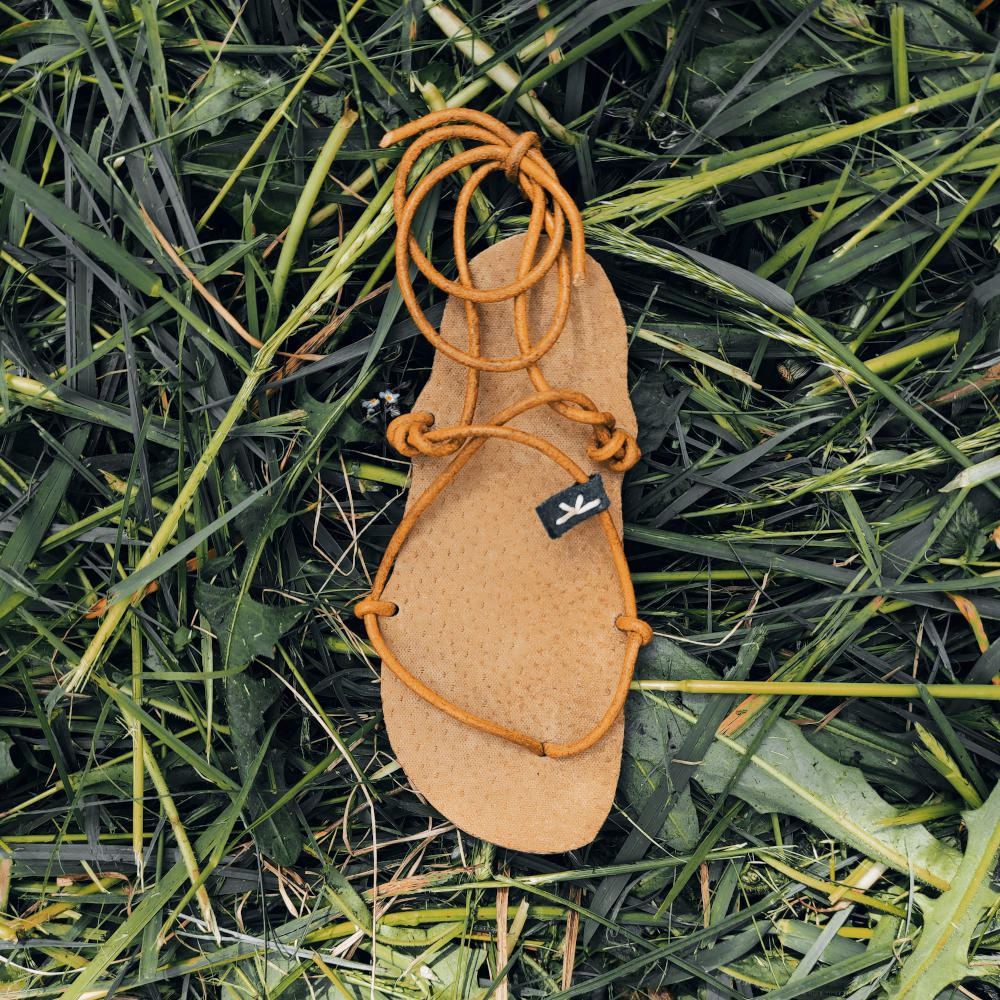
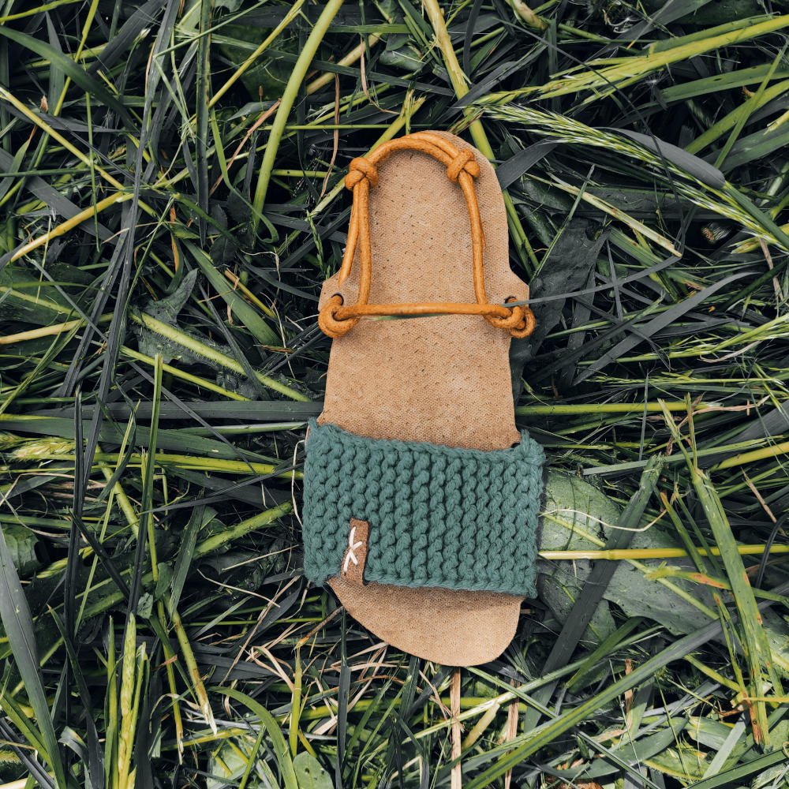

Kariko Sandále
Ručně vyrobené, propracované a lehce nositelné celokožené sandále dají vyniknout vaší osobnosti, a jistě si je budete hýčkat déle než jednu sezónu. Sandále nesou severský nádech jednoduchosti a minimalismu a jsou zhotoveny na míru každé nožky. Navrženo a vyrobeno v Česku.
Hlavní Nabídka
- 
-

-

-

-
Obecné pokyny pro péči o obuv
Vyráběny ručně z přírodní obarvené kůže. Mohou se tedy vyskytnout některé charakteristické rozdíly, jako uvolnění přebytečného barviva, čímž barva může mírně vyblednout. Povrch semišové kůže očistěte speciální houbou nebo kartáčem. Ošetřete čisticím prostředkem na kůži. Nechejte zaschnout a kartáčujte ve směru kůže. Obuv neperte v pračce.
Sandále Originál Uni
Cena: 1299 Kč
Podrážka mikroporézní pryžová | Tloušťka podrážky 2 a 4 mm | Povrch podrážky natural kůže | Úvazek kůže, nebo tkanice | Barva sandálů světlá, střední, nebo tmavá |
Sandále Flexi Uni
Cena: 1399 Kč
Podrážka mikroporézní pryžová | Tloušťka podrážky 2 mm | Povrch podrážky natural kůže | Úvazek kůže, nebo tkanice | Barva sandálů světlá, střední, nebo tmavá |
Sandále Kristy
Cena: 1399 Kč
Podrážka mikroporézní pryžová | Tloušťka podrážky 2 a 4 mm | Povrch podrážky natural kůže | Úvazek kůže, nebo tkanice | Barva sandálů světlá, střední, nebo tmavá |
Sandále Trendy
Cena: 1499 Kč
Podrážka mikroporézní pryžová | Tloušťka podrážky 2 a 4 mm | Povrch podrážky natural kůže | Úplet bavlna | Úvazek kůže, nebo tkanice | Barva sandálů světlá, střední, nebo tmavá |